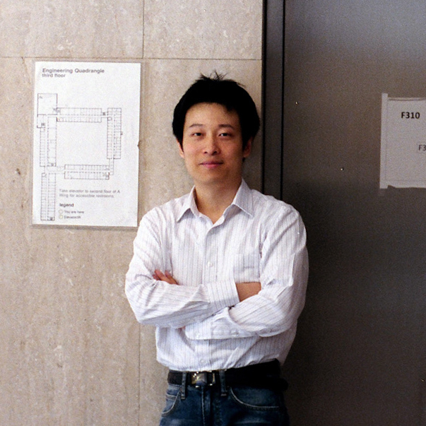

Welcome to the Song Group website (currently under construction). We are interested in nanophotonics, passive-cooling, topological materials, metamaterials, and quantum photonics. We engage in both theoretical and experimental studies. Our research finds applications in sustainable energy, information processing, directed energy, and integrated devices.
Dr. Song joined the University of Sydney in 2021 as a senior lecturer. Before, he was a postdoctoral fellow working with Prof. Shanhui Fan at Stanford University, where he focused on nanophotonics, topological materials, thermal photonics, and renewable energy. He developed the passive cooling textiles together with his collaborators. He also discovered several new effects in fundamental photonics such as the topological edge-gain effect and $\mathcal{PT}$-symmetric optical non-reciprocity. His thesis work was carried out in Prof. Claire Gmachl's group at Princeton University. There, he theoretically studied semiconductor quantum structures using techniques such as the non-equilibrium Green's functions. Experimentally, he developed several novel quantum-cascade light sources and detectors.
Openings:
We have one open Ph.D. position in theoretical nanophotonics. If you are interested, please feel free to contact us at alex.song (at) sydney.edu.au.

Postdoc
Electrical Engineering, Stanford University
2015 ~ now
Postdoc
Electrical Engineering, Princeton University
2014 ~ 2015
Ph.D.
Electrical Engineering, Princeton University
2014
Minor 1: Applied Mathematics, Minor 2: Physics
M.S.
Electronic Engineering, Tsinghua University
2009
B.S. (with Honor)
Mathematics and Physics, Tsinghua University
2006